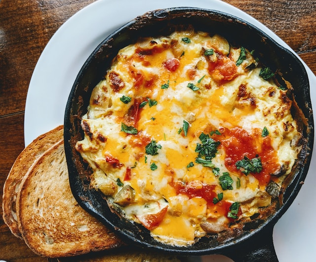

Omelet Recipe

| Ingredients |
Quantity |
| Eggs |
2 |
| Milk |
2 tablespoons |
| Salt and pepper |
To taste |
| Butter |
1 tablespoon |
| Cheddar cheese |
1/4 cup, shredded |
| Green onion |
1, chopped |
Instructions:
- In a small bowl, beat the eggs, milk, salt, and pepper.
- Melt butter in a non-stick skillet over medium heat.
- Pour the egg mixture into the skillet.
-
As the eggs start to set, use a spatula to lift the edges of the omelet
and allow the uncooked eggs to flow to the bottom of the skillet.
- Add the cheese and green onion on one side of the omelet.
-
Fold the other side of the omelet over the filling and slide the omelet
onto a plate.
- Serve hot.
Home